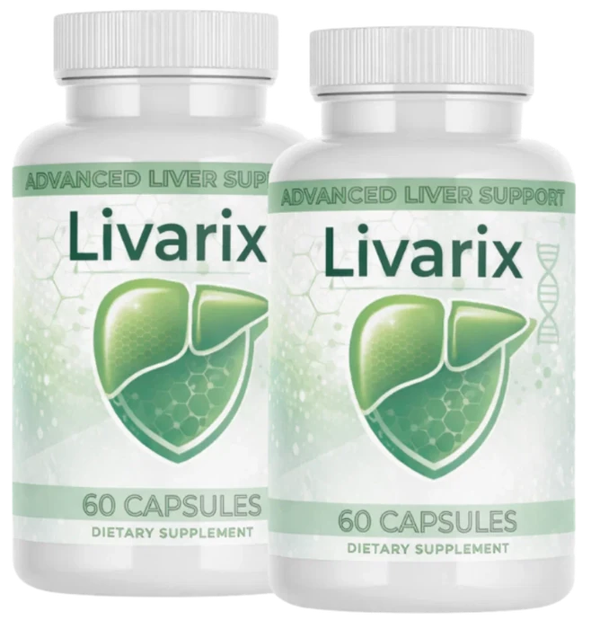
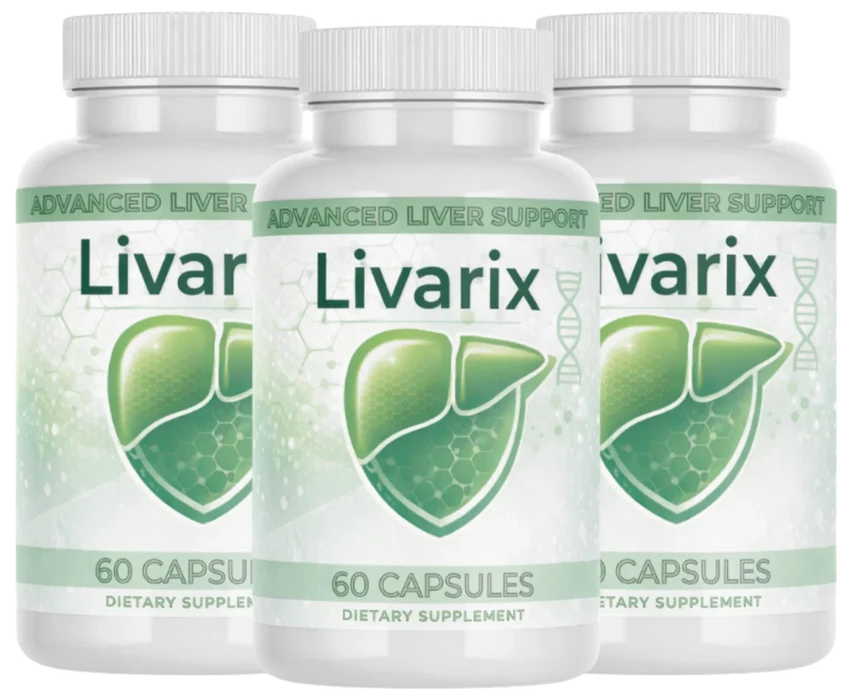
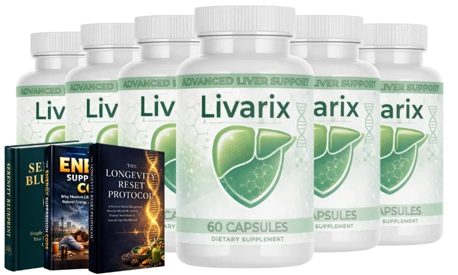

Read our independent Livarix review covering the eight-ingredient botanical formula, published dosages, package pricing, refund policy, and what buyers should verify before ordering this liver wellness supplement.

Livarix is a botanical dietary supplement marketed for adults seeking everyday support for normal liver function and digestive wellness. Its published formula combines eight ingredients—turmeric, beet root, dandelion, artichoke extract, ginger, milk thistle, alfalfa, and L-cysteine HCl—in a convenient capsule format. The product is positioned within the general liver-support category rather than as a treatment for any diagnosed condition, and the brand explicitly states it is not intended to diagnose, treat, cure, or prevent fatty liver disease, hepatitis, cirrhosis, or any other medical condition.
What distinguishes Livarix from many competitors is its transparency regarding ingredient amounts. The brand publishes specific milligram dosages for each component, allowing consumers to compare the formula against other products in the liver-wellness space. However, this transparency comes with important caveats. The product information repeatedly emphasizes that ingredient research should not be confused with clinical evidence for the complete Livarix formula. In other words, the presence of well-known botanicals does not establish that the finished supplement improves liver function or changes individual health outcomes.
Manufacturing standards and third-party testing are not clearly documented in the available product information, which is a notable gap for buyers who prioritize quality verification. The product is described as a dietary supplement, not a medicine, and individual experiences vary. Consumers should approach Livarix as one optional piece of a broader wellness routine rather than a standalone solution for liver health concerns.
Examining published milligram amounts, standardization nuances, and individual profiles.
Leads the formula, providing naturally occurring curcuminoids. Appears widely in herbal products, though exact curcumin content remains uncertain without standardization data.
Provides plant-based pigments and nutritional compounds frequently integrated into wellness formulations.
Botanical associated with bile-related wellness. Individuals with gallbladder or bile-duct concerns should seek professional advice before use.
Also associated with bile function and digestive wellness; buyers should verify extract and standardization details.
Traditional culinary and herbal ingredient. May interact with certain medications, including blood thinners.
Listed as a powder rather than standardized silymarin, representing a variable level of active compounds compared to clinical research doses.
Plant ingredient used in nutritional products; buyers with known sensitivities should review allergen warnings.
An amino acid involved in normal biological processes like glutathione production, though its inclusion does not demonstrate a specific targeted effect from the finished formula. Note: Verify all details against current packaging.
Livarix positions itself within the general liver-support category, using terms like "support" and "everyday wellness." This aligns with regulatory boundaries for dietary supplements, but consumers should set realistic expectations: no capsule can compensate for poor lifestyle habits.
Independent customer feedback is essentially unavailable. Trustpilot currently shows zero reviews for the Livarix website, meaning there is no verified public record of customer experiences. Promotional testimonials should be viewed with skepticism.
A summary of structural and functional characteristics highlighted by the brand.
Breaking down bundle options, daily costs, and guarantee terms.
60-Day Supply (2 Bottles)

90-Day Supply (3 Bottles)

180-Day Supply (6 Bottles)
Livarix offers a money-back guarantee according to brand terms, but exact durations and return conditions (such as return shipping fees or unused bottle requirements) should be verified directly at checkout. For multi-bottle packages like the 180-day supply, note that the supply duration extends well beyond typical evaluation windows, limiting your return window if unsatisfied.
People with existing liver or gallbladder conditions should seek professional advice before use, particularly because dandelion and artichoke are botanicals associated with bile-related wellness. Individuals with bile-duct concerns may find these ingredients unsuitable or requiring medical supervision.
Ginger can interact with blood thinners, and alfalfa raises sensitivity questions for some people. Pregnant or nursing individuals, anyone taking regular medications, or managing chronic conditions should consult a healthcare professional before use. The product is not intended for children, and suggested serving directions (typically two capsules daily in the morning) should be followed exactly.
Clear answers regarding formula, safety, pricing, and usage.
Livarix is a botanical dietary supplement marketed for adults interested in general liver wellness and digestive health. Its published formula combines several botanical ingredients with L-cysteine HCl, and the product is intended to be evaluated as a supplement, not as a medicine or treatment for a diagnosed condition.
The brand-published formula lists turmeric (300 mg), beet root (200 mg), dandelion (100 mg), artichoke extract (50 mg), ginger (50 mg), milk thistle (50 mg), alfalfa (20 mg), and L-cysteine HCl (10 mg). Buyers should verify the current Supplement Facts panel and confirm whether these amounts are per capsule or per full daily serving.
No. Livarix is explicitly not intended to diagnose, treat, cure, or prevent fatty liver disease, hepatitis, cirrhosis, or any other medical condition. Anyone with a diagnosed liver condition or abnormal test results should seek appropriate medical advice rather than relying on supplement marketing.
Yes, both appear on the published ingredient list, with turmeric at 300 mg and milk thistle at 50 mg. Their presence describes the product's composition, but research about either ingredient individually does not establish that Livarix changes liver function or treats liver disease. Buyers should also note that milk thistle is listed as a powder, not standardized silymarin.
Published product information describes a suggested serving of two capsules daily, preferably in the morning. Verify this direction against the current package, confirm the serving basis for the listed amounts, and do not exceed the serving stated on the label.
People with existing liver or gallbladder conditions, abnormal test results, allergies, ongoing medical concerns, or regular medication use should obtain professional advice before using Livarix. Pregnant or nursing individuals should also consult a healthcare professional, and anyone taking medicines that may interact with ginger or other botanicals should ask before starting.
Livarix offers a money-back guarantee according to the brand's published terms. The exact duration, eligibility requirements, return deadlines, shipping responsibility, and processing procedures should be verified against the seller's current refund policy before purchase. Buyers should note the refund deadline against their package supply duration.
Trustpilot currently shows zero reviews for the Livarix website, meaning independent customer feedback is essentially unavailable. Promotional websites may display testimonials, but these should be viewed with appropriate skepticism given their commercial intent.
No. A supplement cannot replace medical advice, diagnostic testing, or prescribed treatment. If you have concerns about your liver, digestive symptoms, or laboratory results, speak with a qualified healthcare professional rather than relying on supplement marketing.
Livarix occupies a middle ground in the crowded liver-wellness supplement market. Its published dosages and transparent ingredient list are genuine positives, allowing consumers to make informed comparisons. The product information is also refreshingly candid about limitations, repeatedly distinguishing ingredient research from clinical proof and warning that the supplement is not a medicine.
However, the absence of independent customer reviews on Trustpilot is a notable gap. The glowing testimonials on promotional websites should be viewed with appropriate skepticism. The milk thistle dose is powdered rather than standardized, which is a meaningful distinction for buyers seeking silymarin. Buyers seeking a straightforward botanical formula with disclosed amounts may find Livarix worth exploring, but they should do so with realistic expectations and a clear understanding that it is one small optional piece of a broader wellness routine.
Before ordering, verify the current Supplement Facts panel, confirm the per-serving basis for listed amounts, calculate the true cost per day, and read the refund policy carefully. If you have liver concerns, abnormal test results, or take regular medications, speak with a qualified healthcare professional first. No supplement can replace that conversation.